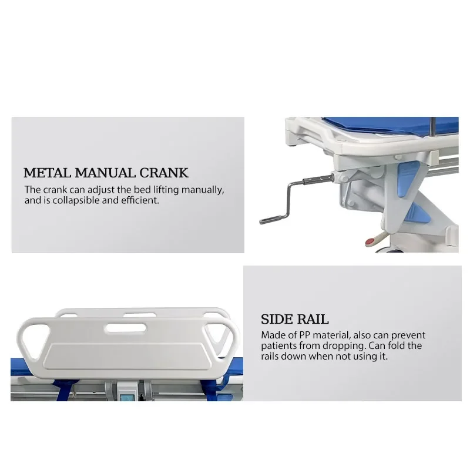
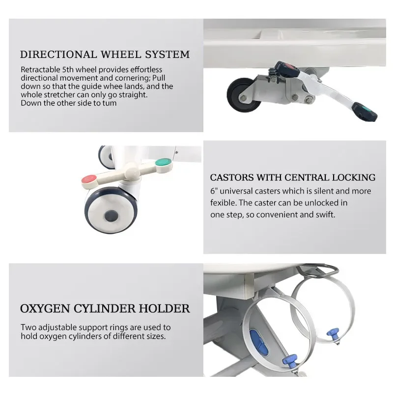
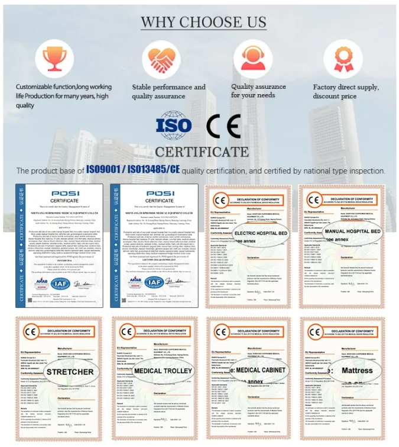
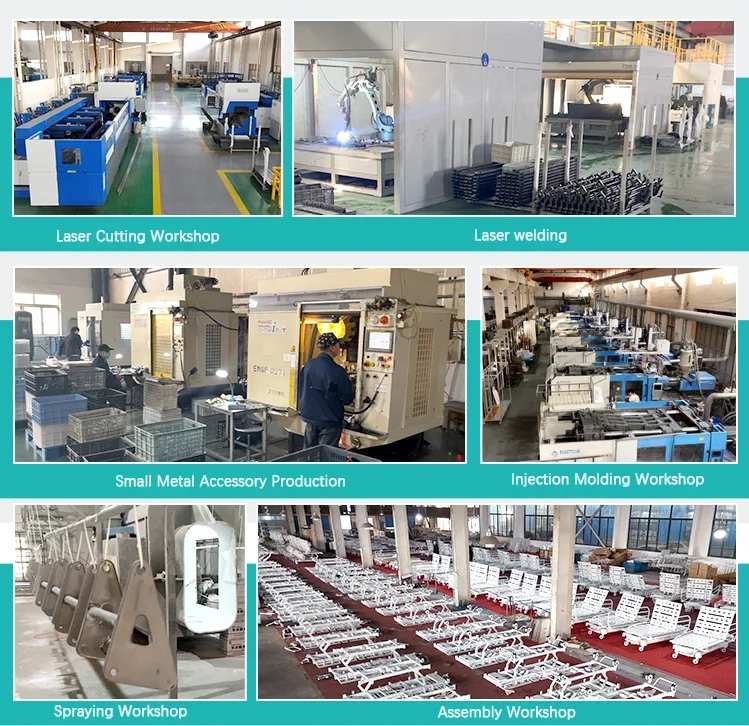
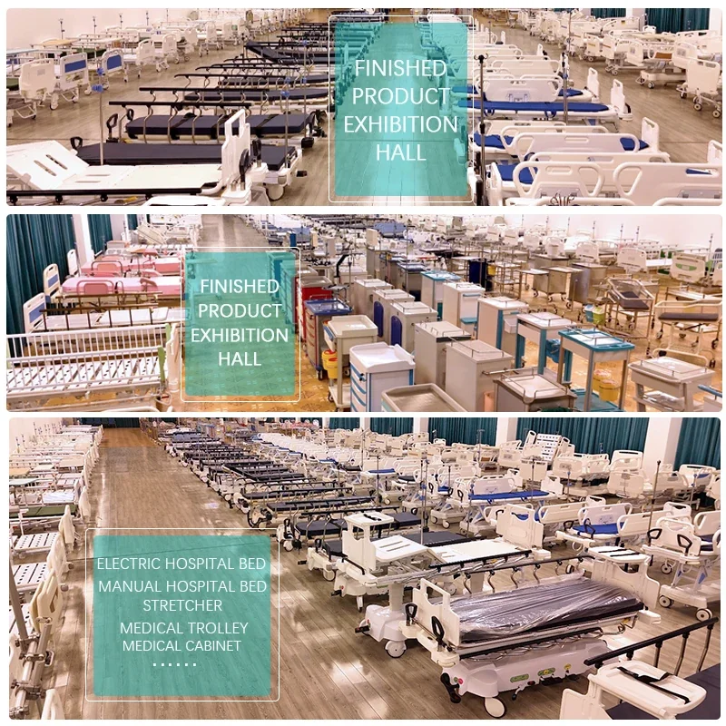
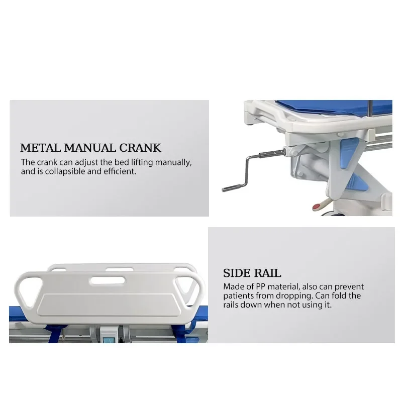
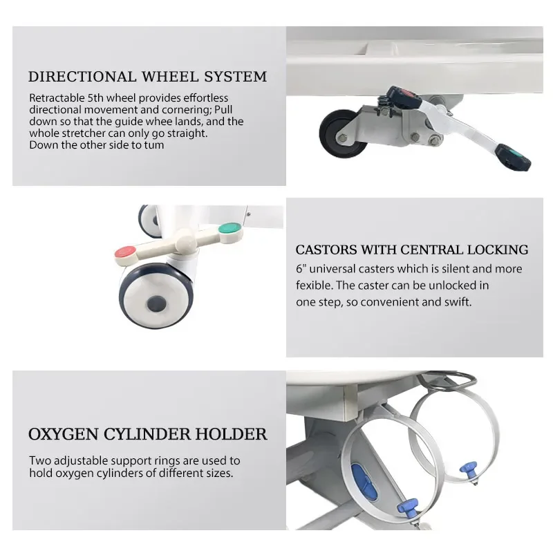
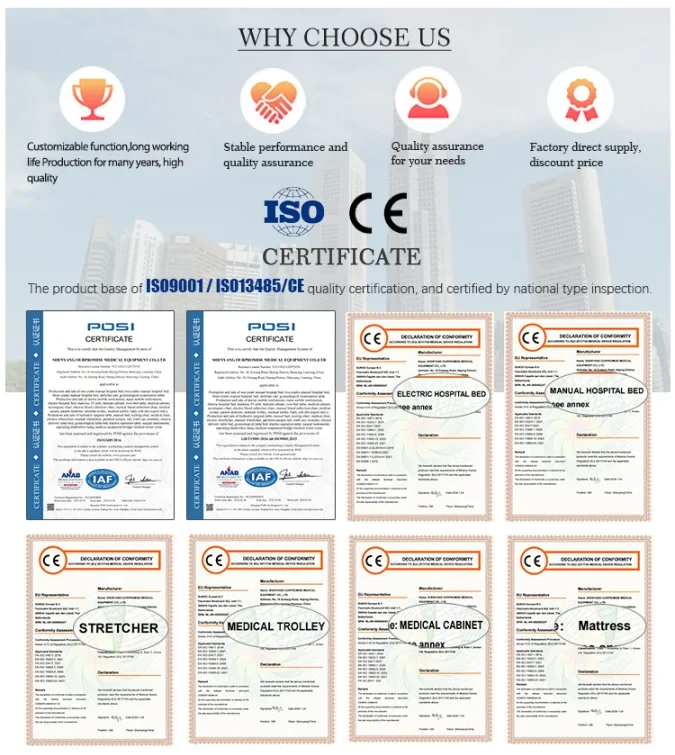
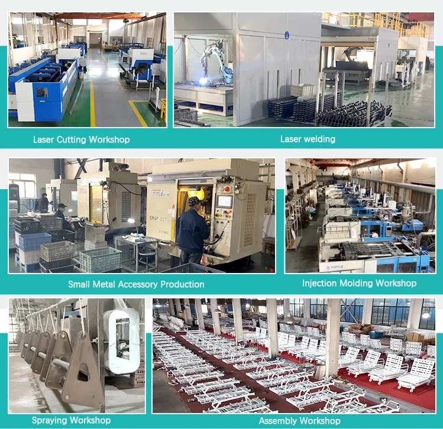
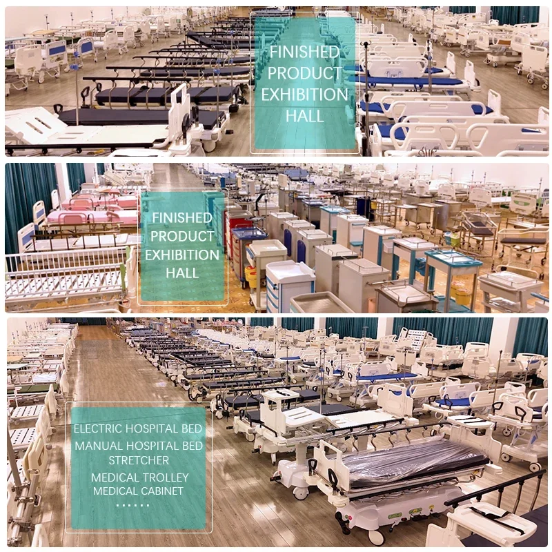

Chariot et brancard de transport d'urgence multifonctionnel manuel pour patients en soins intensifs - ORP-PT02
- Construction durable : Fabriqué avec des matériaux robustes pour résister à une utilisation fréquente dans les environnements de soins exigeants.
- Maniabilité aisée : Équipé de roulettes à roulement fluide pour une navigation sans effort, même sur des surfaces irrégulières.
- Positionnement sécurisé du patient : Les dossiers et repose-jambes réglables assurent un confort optimal et empêchent le patient de glisser pendant le transport.
- Grand espace de rangement : Les compartiments intégrés permettent de ranger facilement le matériel médical essentiel, de manière organisée et à portée de main.
L’ORP-PT02 est la solution idéale pour les professionnels de santé qui privilégient la sécurité, le confort et l’efficacité du transport des patients dans un environnement dynamique.
Le brancard de transfert multifonctionnel manuel ORP-PT02 pour les soins intensifs et les urgences hospitalières est conçu pour assurer un transport sûr et efficace des patients en milieu hospitalier. Sa construction robuste et sa conception polyvalente en font un outil indispensable pour les professionnels de santé.
- Fonctionnement manuel : Le brancard est équipé d'un système de frein à main manuel pour un mouvement fluide et contrôlé, permettant aux utilisateurs d'ajuster facilement la vitesse et la direction.
- Conception pliable :
- Plateforme spacieuse : Offre un espace suffisant pour le confort du patient et un positionnement sécurisé pendant le transport.
- Dispositifs de sécurité intégrés : Équipé de dispositifs de retenue et de fonctionnalités de sécurité pour prévenir les mouvements accidentels ou les blessures pendant le transport.
L'ORP-PT02 est conçu avec des matériaux durables et une construction précise pour répondre aux exigences du milieu hospitalier.
- Fabriqué en acier haute résistance pour une robustesse et une longévité accrues.
- Revêtement en poudre pour une résistance à la corrosion et un nettoyage facile.
Ce chariot multifonction offre de nombreux avantages aux établissements et au personnel de santé :
- Transport efficace des patients : Permet un déplacement rapide et sécurisé des patients entre les services, réduisant les temps d'attente et améliorant l'efficacité du flux de travail.
- Sécurité accrue des patients : Les dispositifs de sécurité intégrés et les sangles de retenue sécurisées minimisent les risques de blessures pour les patients pendant le transport.
- Maniabilité aisée : Le système de frein à main manuel permet un contrôle précis et une navigation fluide dans les couloirs de l'hôpital.
L'ORP-PT02 est conçu pour une utilisation dans divers environnements de soins de santé, notamment :
- Hôpitaux
- Services médicaux d'urgence (SMU)
- Cliniques
- Maisons de retraite
Respectez toujours les protocoles de sécurité et les instructions du fabricant lors de l'utilisation de l'ORP-PT02.